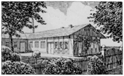
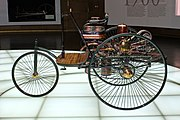
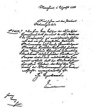
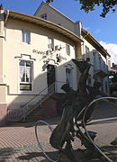

Karl Friedrich Benz
Karl Benz s-a născut Karl Friedrich Michael Vaillant, la 25 noiembrie 1844 la Mühlburg .Când avea doi ani, tatăl său a murit de pneumonie, și numele său a fost schimbat în Karl Friedrich Benz în amintirea tatălui său.
În ciuda vieții modeste, mama sa s-a străduit să-i ofere o educație bună. Benz a urmat școala liceală locală din Karlsruhe .A studiat la Universitatea Politehnică sub instrucția lui Ferdinand Redtenbacher .
Benz a urmat pașii tatălui său spre inginerie locomotivă. La 30 septembrie 1860, la 15 ani, a susținut examenul de admitere la inginerie mecanică la Universitatea din Karlsruhe . Benz a absolvit pe 9 iulie 1864 la vârstă de 19 ani.
În urma educației sale formale, Benz a avut șapte ani de pregătire profesională în mai multe companii, dar nu s-a adaptat în niciuna dintre ele.
S-a mutat apoi la Mannheim pentru a lucra ca desenator și proiectant într-o fabrică de cântare . În 1868 a mers la Pforzheim pentru a lucra la o companie de construcții de poduri Gebrüder Benckiser Eisenwerke und Maschinenfabrik . În cele din urmă, a plecat pentru o scurtă perioadă la Viena pentru a lucra la o firmă de construcții de fier .
În 1871, la vârsta de douăzeci și șapte de ani, Karl Benz s-a alăturat lui August Ritter pentru a lansa Atelierul de turnare a fierului și mecanică din Mannheim , mai târziu redenumit Fabrică de mașini pentru prelucrarea tablelor.
Primul an al întreprinderii a mers foarte prost. Dificultatea a fost depășită când logodnica lui Benz, Bertha Ringer , a cumpărat cota lui Ritter în companie folosind zestrea ei .
La 20 iulie 1872, Karl Benz și Bertha Ringer s-au căsătorit. Au avut cinci copii: Eugen (1873), Richard (1874), Clara (1877), Thilde (1882) și Ellen (1890).
În ciuda nenorocirilor din afaceri, Karl Benz a condus la dezvoltarea de noi motoare în fabrica timpurie pe care el și soția sa o deținea. Pentru a obține mai multe venituri, în 1878 a început să lucreze la noi brevete. În primul rând, și-a concentrat toate eforturile pentru crearea unui motor fiabil în doi timpi pe benzină . Benz și-a terminat motorul în doi timpi la 31 decembrie 1879, Revelion și a primit un brevet pentru acesta în 28 iunie 1880.
Karl Benz și-a arătat adevăratul său geniu, însă, prin invențiile sale succesive înregistrate în timp ce a proiectat ceea ce va deveni standardul de producție pentru motorul său în doi timpi. Benz a brevetat în scurt timp sistemul de reglare a vitezei , aprinderea folosind scântei cu baterie , bujie , carburator , ambreiaj , schimbător de viteze și radiator de apă .
Hobby - ul de-o viata al lui Benz l-a dus la un atelier de reparații de biciclete din Mannheim, deținut de Max Rose și Friedrich Wilhelm Eßlinger. În 1883, cei trei au fondat o nouă companie producătoare de mașini industriale: Benz & Companie Rheinische Gasmotoren-Fabrik , denumită de obicei Benz & Cie. Crește rapid la douăzeci și cinci de angajați, în curând a început să producă și motoare statice cu gaz .
Succesul companiei i-a oferit lui Benz ocazia de a se dedica vechii sale pasiuni de a proiecta o trăsură fără cai . Pe baza experienței sale și a iubirii pentru biciclete, a folosit tehnologie similară atunci când a creat un automobil . Dispune de roți de sârmă , cu un motor în patru timpi de design propriu între roțile din spate, cu o aprindere a bobinei foarte avansate și răcire evaporativă. Karl Benz și-a încheiat creația în 1885 și a numit-o „ Benz Patent Motorwagen ”.
Motorwagen a fost brevetat la 29 ianuarie 1886 sub denumirea de DRP-37435: "automobil alimentat cu gaz". Versiunea din 1885 a fost greu de controlat, ceea ce a dus la o coliziune cu un zid în timpul unei manifestații publice. Primele teste de succes pe drumurile publice au fost efectuate la începutul verii anului 1886. Anul următor, Benz a creat Motorwagen Model 2, care a avut mai multe modificări, iar în 1889, a fost introdus modelul definitiv 3 cu roți de lemn, prezentat la Paris.
Benz a început să vândă vehiculul (anunțându-l drept " Benz Patent Motorwagen ") la sfârșitul verii lui 1888, devenind astfel primul automobil disponibil comercial din istorie. Al doilea client al Motorwagen a fost un producător de biciclete parizian Emile Roger , care construia deja motoare Benz sub licență de la Karl Benz de câțiva ani. Roger a adăugat automobilele Benz (multe construite în Franța) la linia pe care o transporta la Paris și inițial majoritatea au fost vândute acolo.
Versiunea timpurie din 1888 a Motorwagen a avut doar două angrenaje și nu a putut urca dealuri neajutate. Această limitare a fost rectificată după ce Bertha Benz a făcut celebra călătorie conducând unul dintre vehicule la mare distanță și i-a sugerat soțului său adăugarea unei a treia unelte pentru urcarea dealurilor. Pe parcursul acestei călătorii a inventat și plăcuțe de frână.
Prima călătorie pe distanță mondială cu automobilul a fost întreprinsă de Bertha Benz folosind un model 3. În dimineața zilei de 5 august 1888, Bertha - probabil fără știrea soțului ei - a luat vehiculul într-o călătorie de 104 km de Mannheim la Pforzheim să o viziteze pe mama ei, luându-i pe fii ei Eugen și Richard cu ea. Pe lângă faptul că a trebuit să localizeze farmaciile pe parcursul alimentării, a reparat diverse probleme tehnice și mecanice. Una dintre acestea a inclus invenția garniturii de frână ; după niște pante mai lungi în jos, a ordonat unui cizmar să cuieze piele pe blocurile de frână. Bertha Benz și fiii au ajuns în sfârșit la căderea nopții, anunțând realizarea lui Karl prin telegramă. Intenția ei a fost să demonstreze fezabilitatea utilizării Benz Motorwagen pentru călătorii și să genereze publicitate în modul în care se face cunoscut acum ca marketing live.
Marea cerere de motoare statice cu ardere internă l-a obligat pe Karl Benz să extindă fabrica din Mannheim, iar în 1886 a fost adăugată o nouă clădire situată pe Waldhofstrasse (funcționând până în 1908). Benz & Cie. Au crescut intermediar de la 50 de angajați în 1889 la 430 în 1899.
În ultimii ani ai secolului al XIX-lea, Benz a fost cea mai mare companie de automobile din lume cu 572 de unități produse în 1899.
Datorită dimensiunii sale, în 1899, Benz & Cie. A devenit o societate pe acțiuni odată cu sosirea lui Friedrich von Fischer și Julius Ganß, care au venit la bord ca membri ai Consiliului de administrație . Ganß a lucrat în departamentul de comercializare, care este oarecum similar cu marketingul în corporații contemporane.
Noii directori au recomandat ca Benz să creeze un automobil mai puțin scump, potrivit pentru producția de masă . În 1893, Karl Benz a creat Victoria , un automobil cu doi pasageri cu un motor de 2,2 kW (3,0 CP), care putea atinge viteza maximă de 18 km / h (11 km / h) și avea o punte față pivotă, acționată de o rolă. prelată cu lanț pentru direcție . Modelul a avut succes cu 85 de unități vândute în 1893.
Benz Velo a participat și la prima cursă automobilistică din lume, Parisul din 1894 până la Rouen , unde Émile Roger a terminat pe locul 14, după ce a parcurs cei 126 km (78 mi) în 10 ore 01 minute cu o viteză medie de 12,7 km / h (7,9 mph).
În 1895, Benz a proiectat primul camion cu un motor cu ardere internă din istorie. De asemenea, Benz a construit primele autobuze auto din istorie în 1895, pentru compania de autobuze Netphener .
În 1896, Karl Benz a primit un brevet pentru proiectarea primului său motor plat . Acesta avea pistoane opuse orizontal , un design în care pistoanele corespunzătoare ajung simultan la centrul mortal, echilibrându-se astfel reciproc în raport cu impulsul . Motoarele plate cu patru sau mai puțini cilindri sunt cel mai frecvent numite motoare boxer , boxermotor în limba germană și sunt, de asemenea, cunoscute sub numele de motoare opuse orizontal . Acest design este încă utilizat de Porsche , Subaru și unele motoare de înaltă performanță utilizate în mașinile de curse .

Primul hangar al lui Carl Benz din Mannheim, Germania

Replică a autovehiculului lui Benz din 1885

Motor conform patentului lui Benz - Benz Patent Motorwagen

Primul permis de conducere, conferit lui Carl Benz, pe 1 august 1888

Prima stație de combustibil din lume, la Farmacia orașului din Wiesloch, Germania